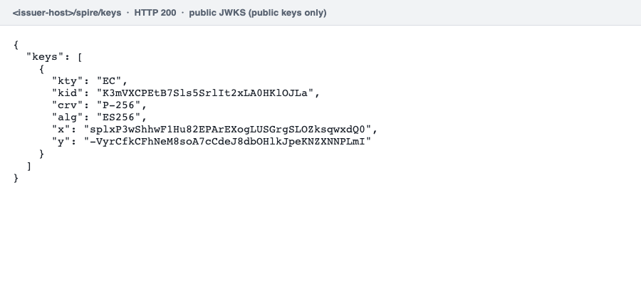
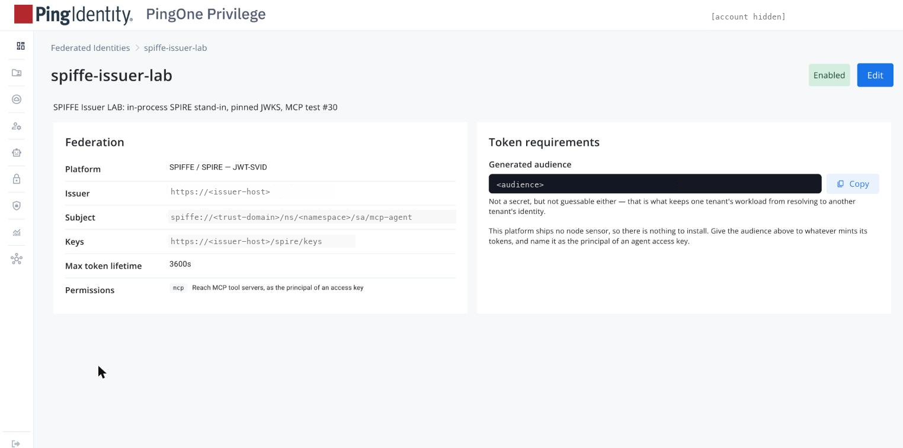
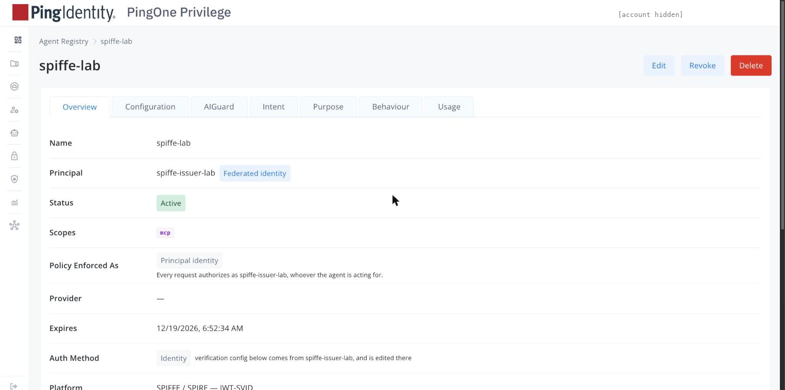
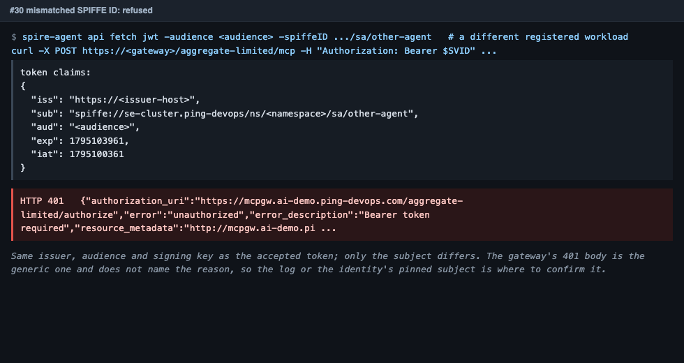

What this proves
The test: present a valid test SPIFFE identity and a mismatched or untrusted identity to the gateway. In Privilege this is a Federated Identity (the new display name for Non-Human Identity; the console API object is still NonHumanIdentity at /v1/nonhumanidentities). The agent proves who it is with a short-lived JWT-SVID instead of a static key, and the gateway checks the issuer, the subject (the SPIFFE ID) and the audience.
Real run — results (2026-11-19)
| Present | Expected at the gateway | Actual result |
|---|---|---|
| Valid JWT-SVID (right issuer, right SPIFFE ID, right audience) | accepted, tools/list returns 200 | 200 with the real tool list (banking tools via the aggregate-limited door) |
| Mismatched: right issuer, a different SPIFFE ID | 401, subject mismatch | 401 (SVID minted for a different registered workload was refused) |
| Untrusted: the right SPIFFE ID but signed by an issuer / key the gateway does not trust | 401, issuer or signature rejected | 401 (a token with a corrupted signature, and earlier a token signed by a key the SPIRE JWKS does not publish) |
Evidence is the HTTP statuses (re-run and confirmed 2026-11-19). A search of the gateway pod's log files found no per-call workload token accepted / rejected line for the SPIFFE key, although such lines exist for the PingFederate key. The log does show the setup: the gateway loaded the SPIRE JWKS (workloadid: jwks https://ai-demo.ping-devops.com/spire/keys loaded 1 keys) and upserted the key for the SPIRE issuer and subject.
200 with a real tool list, and refused both negatives. The issuer is SPIRE 1.7.2 running in the SE Kubernetes cluster (namespace ping-devops-cmuir), whose OIDC discovery provider is public at https://ai-demo.ping-devops.com/spire/keys (issuer https://spire.ai-demo.ping-devops.com). Privilege NHI spiffe-issuer-lab pins issuer, subject and JWKS URI; agent key spiffe-lab (custodian = the NHI) is granted on the MCP door aggregate-limited via pacpolicy spiffe-lab-aggregate-limited. Evidence text below; no token or key values are reproduced anywhere on this page.Before you start
| Need | Detail |
|---|---|
| Privilege console admin | Can create Federated Identities, agent keys and grants. |
| An MCP door (app) to protect | An MCP app already registered on the gateway, with at least one tool. |
| A SPIFFE issuer with a public JWKS | For the real run: SPIRE deployed in the SE cluster with its OIDC discovery provider routed publicly (ours: https://ai-demo.ping-devops.com/spire/keys). It signs RS256 or ES256 JWT-SVIDs. |
Stand up an issuer that mints JWT-SVIDs — SPIRE in the SE cluster (done)
The real run uses SPIRE 1.7.2 in namespace ping-devops-cmuir. Its OIDC discovery provider is exposed through the demo ingress, so the public JWKS is https://ai-demo.ping-devops.com/spire/keys and the token iss is https://spire.ai-demo.ping-devops.com. It mints all three tokens with a short lifetime (the identity caps exp − iat at 3600 s):
| Token | iss | sub | aud | signed by |
|---|---|---|---|---|
| valid | https://spire.ai-demo.ping-devops.com | spiffe://se-cluster.ping-devops/ns/ping-devops-cmuir/sa/mcp-agent | priv-nhi-lfcf6fc343gsxmw4aw4cn2tu5rpkvqka | a key in the published JWKS |
| mismatched | https://spire.ai-demo.ping-devops.com | spiffe://se-cluster.ping-devops/ns/ping-devops-cmuir/sa/other-agent (a different registered SPIRE workload) | priv-nhi-lfcf6fc343gsxmw4aw4cn2tu5rpkvqka | a key in the published JWKS |
| untrusted | https://spire.ai-demo.ping-devops.com | the valid SPIFFE ID | priv-nhi-lfcf6fc343gsxmw4aw4cn2tu5rpkvqka | a key not in the trusted JWKS |

Create the Federated Identity (done — console API)
On our tenant the identity spiffe-issuer-lab was created and updated via the console API. The real values:
| Field | Value (real run) |
|---|---|
| Name | spiffe-issuer-lab |
| Enabled | on (the only kill switch) |
| Platform | spiffe (a UI hint only; never used for verification) |
| Issuer | https://spire.ai-demo.ping-devops.com |
| Subject | spiffe://se-cluster.ping-devops/ns/ping-devops-cmuir/sa/mcp-agent (leave "allow any subject" off) |
| Audience | priv-nhi-lfcf6fc343gsxmw4aw4cn2tu5rpkvqka (mandatory: an unbound token is replayable elsewhere) |
| JWKS URI | https://ai-demo.ping-devops.com/spire/keys |
| Max token lifetime | 3600 seconds |
| Scopes | mcp only |
API form (same fields, from the swagger schema imodelNonHumanIdentitySpec; confirm against your tenant's swagger before use):
POST /api/<tenant>/v1/nonhumanidentities
{ "Spec": {
"Enabled": true,
"Scopes": ["mcp"],
"Federation": {
"Platform": "spiffe",
"Issuer": "https://spire.ai-demo.ping-devops.com",
"Audience": "priv-nhi-lfcf6fc343gsxmw4aw4cn2tu5rpkvqka",
"Subject": "spiffe://se-cluster.ping-devops/ns/ping-devops-cmuir/sa/mcp-agent",
"JwksURI": "https://ai-demo.ping-devops.com/spire/keys",
"MaxTokenLifetimeSec": 3600 } } }
Put an agent key behind the identity and grant the door (done)
A Federated Identity does not authenticate anyone by itself. Create an agent key whose custodian is the Federated Identity, and select the MCP app (that is the grant). On our tenant: agent key spiffe-lab with the NHI spiffe-issuer-lab as custodian, granted on the MCP door aggregate-limited via pacpolicy spiffe-lab-aggregate-limited. Two refusals to expect if you get it wrong:
WorkloadIdentity and a NonHumanIdentity CustodianRef are mutually exclusive: leave the key's own workload identity empty.CustodianRef and UserRef name different principals: clear the user reference if you cloned a key that had a human custodian.
The gateway log should say upserted workload key <key> issuer=… subject=…. If it says rebuilding 0 key(s), nothing is attached to the identity yet.

spiffe-lab: its principal is the Federated identity spiffe-issuer-lab, scope mcp, policy enforced as the identity, authentication method Identity. Account masked.Present the three identities to the door
Send each token as the bearer on a tools/list call to https://mcpgw.ai-demo.ping-devops.com/aggregate-limited/mcp (initialize first, as any MCP client does). Wait about 4 minutes after creating the objects before the first test.
| Token | Expect | Gateway log |
|---|---|---|
| valid | 200, tool list | no per-call line found for this key on 2026-11-19; the 200 is the evidence |
| mismatched | 401 | no per-call line found; the 401 is the evidence |
| untrusted | 401 | no per-call line found; the 401 is the evidence |
How the real run minted the SVIDs (from inside the cluster, using the SPIRE agent's Workload API):
kubectl exec spire-agent-1 -n ping-devops-cmuir -- \
/opt/spire/bin/spire-agent api fetch jwt \
-socketPath /run/spire/agent-sockets/socket \
-audience priv-nhi-lfcf6fc343gsxmw4aw4cn2tu5rpkvqka
# mismatched variant: add -spiffeID spiffe://se-cluster.ping-devops/ns/ping-devops-cmuir/sa/other-agent
200 and a tool list. Decode and show the claims; hide the token.
401.
401.Evidence that it was real (captured 2026-11-19)
- Not found: a per-call
workload token acceptedorrejectedlog line for keyspiffe-lab. Searched all log files on the gateway pod on 2026-11-19, including calls made minutes earlier. Treat the HTTP statuses as the evidence, and capture a console screenshot of the key instead of a log screenshot unless the gateway is set to log these. - Confirmed: the identity
spiffe-issuer-lab, keyspiffe-laband pacpolicyspiffe-lab-aggregate-limitedexist in the console (created via the console API), not in a lab. - Confirmed: the three tokens were minted by SPIRE in the SE cluster; the gateway fetched the JWKS from the public URL
https://ai-demo.ping-devops.com/spire/keys.

If it fails
| You see | Cause |
|---|---|
valid token gets 401, no workload token log line | No agent key behind the identity (rebuilding 0 key(s)), or the identity is disabled, or the changes have not propagated (~4 min). |
signature does not verify against any known key | The issuer is not signing with a key published in its JWKS. |
| audience error | The token's aud is not the door URL the identity names. |
| lifetime error | exp − iat is longer than the identity's max token lifetime. |
valid token accepted but the call is 403 | The key has no grant on the app, or the tool is not allowed. |